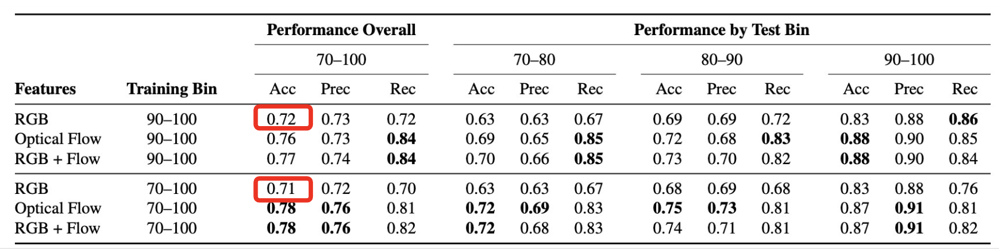
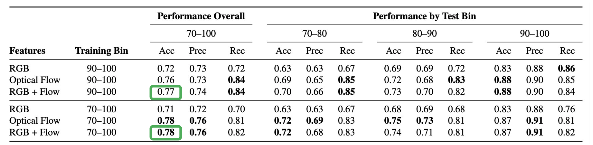
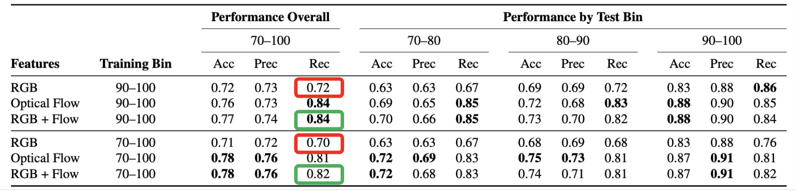
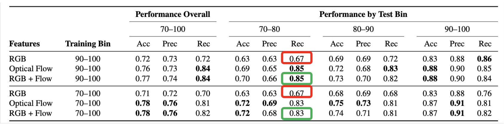
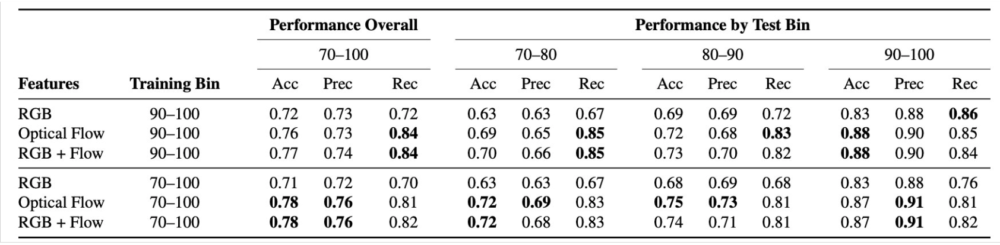
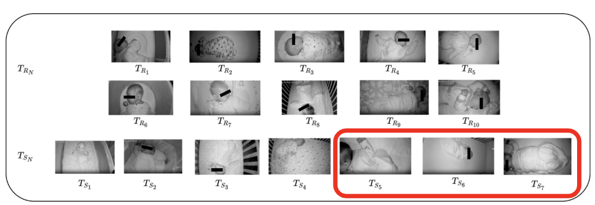

Results and Analysis

- When using RGB features alone, models achieve moderate accuracy (red boxes)

- When using RGB features alone, models achieve moderate accuracy (red boxes)
- Introducing optical flow features in addition to RGB results in a substantial improvement in model performance (green boxes)

- When using RGB features alone, models achieve moderate accuracy (red boxes)
- Introducing optical flow features in addition to RGB results in a substantial improvement in model performance (green boxes)
- For pure- and mixed-state models recall increases by 12 and 11 points, respectively

- When using RGB features alone, models achieve moderate accuracy (red boxes)
- Introducing optical flow features in addition to RGB results in a substantial improvement in model performance (green boxes)
- Most significant improvement is observed in the 70–80 bin, recall is 18 points higher and precision is 3 points higher in the combined model compared to the RGB-only model.

- Results underscore the importance of optical flow in capturing subtle wake events, particularly in mixed-state clips
- Optical flow features enable the model to more effectively differentiate between sleep and wake than RGB features alone
- Optical flow model exhibits significantly better sensitivity to wake events compared to the RGB-only model
Results: Subject-Wise Performance Comparison

- The faces of subjects where the algorithm performs best, such as TS1, TS2, and TS3 appear prominently visible throughout the video
- Faces may provide the model with more reliable motion cues, that describe the superior performance (97%, 95%, and 94% for TS1, TS2, and TS3, respectively)
- For test subjects where algorithm performance is weaker, we notice the face becomes more obstructed and obscured
- See face of subjects TS5, TS6, and TS7 appear off-center, darkened, or out of frame

- The faces of subjects where the algorithm performs best, such as TS1, TS2, and TS3 appear prominently visible throughout the video
- Faces may provide the model with more reliable motion cues, that describe the superior performance (97%, 95%, and 94% for TS1, TS2, and TS3, respectively)
- For test subjects where algorithm performance is weaker, we notice the face becomes more obstructed and obscured
- See face of subjects TS5, TS6, and TS7 appear off-center, darkened, or out of frame